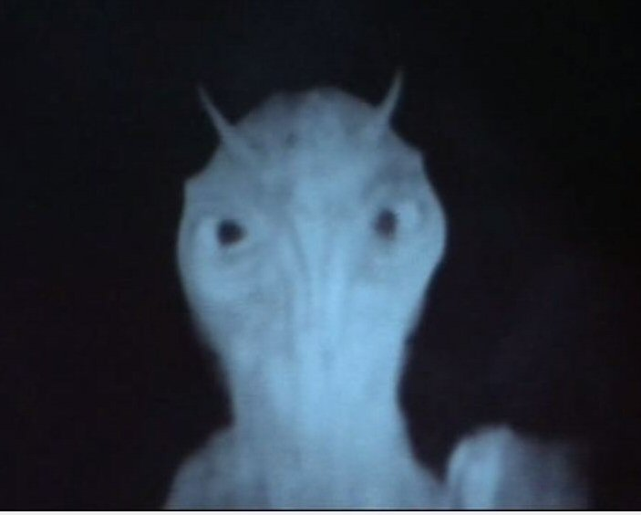

Thursday, December the 8th, 2011
back to: title, date or indexes
Your Hooting Yard advent calendar picture today comes with a parental guidance warning, as it may frighten the tinies, not to mention the weak-minded and those of puny brainpans. It is a terrifying still taken from Quatermass And The Pit (Roy Ward Baker, 1967), showing the Hobbs End tube station demon.
